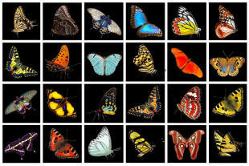

Tenses: the index

Because tenses, their concepts and their forms are fundamental to understanding any language, this section is common to both the initial and in-service training sections. It is, therefore linked from both those indexes and from a range of other areas of the site.
The following links will take you where you need to go (eventually):
| The map of English tenses | This is a diagram of all the English
tense forms. Clicking on parts of it will take you to
guides to the individual tense forms of
English. The page also contains examples of all the forms with their main uses. |
| Time lines for tenses | This is a set of time lines which will help you and your learners understand the concepts which the tense forms encode. There's a link from here to a guide for learners. |
| Time, tense and aspect | There is an introduction to some key
terms and four dedicated guides linked from it in this section. The guides are more advanced because they consider a range of aspects (not only progressive, continuous and perfect). |
| The initial-plus section | This takes you to the initial-plus
index to verbs which contains links to simpler guides. From there you can navigate to the area which interests you (mostly essential guides to key areas). |
| The in-service section | This takes you to the
in-service index to verbs for more technical guides to verbs and tenses. From there you can navigate to the area which interests you (aspect, mood, subjunctives etc.). |
| The A-Z index | As an alternative, use this index to
find what you need. All tenses and much else are indexed here. |